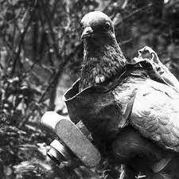

While based off of a real bird, thousands of people believe that all current birds have been replaced by high technology surveillance robots. The government created a secret mass extinction.
Here is the original website that I got the idea and information from: BirdsAren'tReal

First page: S.Kim page #1
Previous page: S.Kim page #2